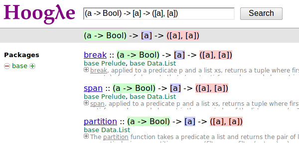

| Author: | 黄毅 众禄基金程序员 |
|---|---|
| email: | yi.codeplayer@gmail.com |
| blog: | http://yi-programmer.com/ |
| github: | http://github.com/yihuang |
今天的话题是叫做 编写显然正确的代码 。
非常高兴来到QCon和大家作这个分享，作为一个码农， 我能分享的也就是一些代码了，今天这些代码都跟Haskell有关， 所以在前面想先快速地过一下haskell基本的语法。
filter :: (a->Bool) -> [a] -> [a]
filter p [] = []
filter p (x:xs)
| p x = x : filter p xs
| otherwise = filter p xs
这是一个函数定义，第一行是类型签名，冒号前面是函数名，后面是函数的类型，参数和返回值的类型统一由箭头组合在一起，最后一个是返回值，第一个参数是个高阶函数。这种语法使得curry化非常方便，这一点我们后面会讲到。
后面几行呢就是函数的定义了，这里比较有意思的地方就是模式匹配了， 模式匹配这个东西从执行的角度来讲它就是一种分支的方法， 但是可读性很好，而且还有一个非常好的性质，那就是编译器可以自动检查代码是否把所有分支都覆盖全面了，如果遗漏了哪个分支，它会出一个警告，这一点对于编写正确的代码来说太有用了。
filter :: (a->Bool) -> [a] -> [a]
-- filter p [] = []
filter p (x:xs)
| p x = x : filter p xs
| otherwise = filter p xs
$ ghc -Wall foo.hs
Warning: Pattern match(es) are
non-exhaustive
比如注释掉对空列表进行处理的部分，ghc就会给这么一个警告。
add :: Int -> Int -> Int
(add 1) :: Int -> Int
>>> let inc = add 1
>>> inc 2
3
Curry化又叫部分函数调用，也就是一个函数本来接受两个参数，返回一个值的，你现在只给它传一个参数，你就得到了一个只接受一个参数的函数了。通过后面的代码我们会看到，这个特性对于函数式编程风格来说非常重要，它可以大大提高代码重用性，一个函数可以当几个函数用。
>>> 1 + 2
3
>>> (+) 1 2
3
>>> add 1 2
3
>>> 1 `add` 2
3
Haskell里操作符和普通函数没太大区别，唯一的区别就是操作符由特殊符号组成，而普通函数名由标示符组成。
而不管操作符还是普通函数，都可以写成前缀形式，也可以写成中缀形式，这几句代码都是等价的。
1 `add` 2 `add` 3 `add` 4
VS
add (add (add 1 2) 3) 4
中缀形式在嵌套的时候特别给力，比如这个例子。其实haskell代码也可以写成lisp风格的。
\a b -> a + b
这个lambda语法有够简单了，一条斜杠定义lambda函数的开始，后面空格分隔的是形参，箭头后面就是函数定义。
恭喜你，你已经学会了Haskell 50% 常用语法
一、贴近自然语言描述
如何让代码更直接地表达你的想法
现在正式进入本次分享的题目
显然正确的代码，这是个很虚的话题，我对它分解成两部分， 第一部分就是如何让代码更直接地表达我们的意图，我先举个例子。
从列表取大于10且小于100的数
filter ((>10) `and` (<100))
这个例子够简单了，不过我想也没有太多语言能想这个代码这样和问题描述如此贴近吧。 下面我们就把它拆开来，它是由哪些部分拼起来的。
\x -> filter ? x
不如直接点：
filter ?
首先，我们先考虑这个大的框架，就是从列表取符合某个条件的数，一个lambda函数就可以搞定， 这个很普通，但是按照我们上面介绍的curry特性，我们可以更进一步，写成这种形式，这两个表达式是等价的。 Curry特性省了我们很多代码。
\x -> x > 10
不如直接点：
(>10)
然后我们来考虑具体过滤条件，大于10，也很简单，一个lambda函数搞定，但我们可以再一次应用我们的curry特性， 把它写成等价形式，是不是更直接？ 你可以看作是从 (x>10) 里面把x拿掉，就产生了一个这样函数，当你给它传一个参数，它就把那个x的空给补上。
同样：
(<100)
这个就没什么悬念了
&&
:: Bool -> Bool -> Bool
类型不对
最后，我们还剩下一个 且 ，我们知道and操作符，接受两个bool值返回他们的且，但很遗憾在这里类型不匹配
?
:: (a -> Bool)
-> (a -> Bool)
-> (a -> Bool)
因为我们需要组合的是两个判断函数，而不是简单的布尔值。
and f g = \x -> f x && g x
:: (a -> Bool)
-> (a -> Bool)
-> (a -> Bool)
也许我们只能专门定义一个函数来解决这个问题， 这个函数接受两个函数作为参数，返回一个lambda函数， 当给它传一个值，它把这个值传给那两个函数，再把结果且一下。
但从我这冗长的描述可以感觉到，这个实现还是相对比较复杂的。 有没有更直接的实现方法呢。
$ lambdabot
>>> :pl \f g x -> f x && g x
liftM2 (&&)
haskell很意思的地方之一就是它有很多有意思的工具，比如说这个lambdabot， 里面这个 pl 命令可以把lambda表达式转换成函数组合的风格， 比如刚才这个and函数的定义传给它，就被转换成了一个非常简单的实现， 也就是说，and函数实际上是 liftM2 把 && 函数提升一下的结果！ 只要你了解 liftM2 的含义，你马上就能明白 and 函数的含义， 不过今天因为时间关系，我们就不介绍liftM2函数本身了，大家有兴趣可以去了解一下 Applicative。
and = liftM2 (&&)
:: (a -> Bool)
-> (a -> Bool)
-> (a -> Bool)
所以 and 的实现也可以这么直接
filter ((>10) `and` (<100))
最后把这些函数合并在一起
(.) :: (b -> c)
-> (a -> b)
-> (a -> c)
(f . g) x = f (g x)
+--------------------+ | +---+ +---+ | <<-c---c b----b a---a-<<- | +---+ +---+ | +--------------------+
函数有很多中组合方式，刚才说的是一种，我们再来看另一种， 这个组合函数类似unix管道， 它把两个函数组合在一起，当你向它传参数的时候，它先把参数传给右边的函数， 再把右边函数的返回值传给左边函数。 加上前面介绍过的中缀语法形式，它可以把一对函数连在一起，非常节省代码。
在二维数组里找长度大于5的子数组
在符合要求的子数组里找所有偶数
如果数据小于10则乘以2,大于10除以2
最后统计符合要求的数据的和
我们来看这个例子，这是微博上一个朋友发的题目。按照过程式风格的写法， 大概就是几个循环，几个中间数组加中间变量。 我们来看看haskell函数式程序的写法，看看和过程时写法有什么不同。
sum' = sum
. map (\x -> if x<10
then x*2
else x `div` 2)
. filter ((==0) . (`mod` 2))
. concat
. filter ((>5) . length)
这个程序我们要从下往上读，和刚才的问题描述语言基本上是一一对应的。 最下面filter取长度大于5的子数组，然后concat是把二维数组拼成一维， 再来一个filter过滤出偶数，然后用map遍历一次，最后传给sum求和。
GHC 编译器优化
看到这么多函数式程序，我想大家可能会想，这么多小函数套小函数， 性能一定很差吧，尤其对于动态语言来说，函数调用是很大一块开销。 但haskell通过编译器的优化，可以同时获得代码的抽象能力以及很好的性能。 优化最主要的手段就是内联，还有等价代码转换， 内联把分离开发的代码拉到一起，而代码转换对代码进行化简，最后得到执行效率更好的代码， 而且内联还可以跨模块，这对haskell这样的语言来说很关键。
ghc -O
-ddump-simpl
foo.hs
GHC编译器中间代码是Haskell的子集
GHC编译器中间代码用的也是Haskell的一个子集，而且还是带类型的，这个很有意思， 对于GHC的开发者来说，这意味着他们可以比较放心地对代码进行转换， 因为它可以对中间代码进行类型检查，类型检查可以保证代码转换基本上不会出太大问题。 还有一个好处就是，我们可以很方便地查看编译器优化后的代码，因为它还是haskell的语法。 这个命令就是用来导出中间代码的。下面我们用这个命令看几个例子。
(==0) . (`mod` 2)
优化后：
\x -> case modInt# x 2 of
0 -> True
_ -> False
可以看到这两个小函数的组合经过内联和转换变成一个简单的判断语句了。 为了显示效果好一点，这里给的代码经过了简单的清理，GHC直接导出的代码还包括一切其他的信息。
map (*2)
. filter ((==1) . (`mod` 2))
go xs = case xs of
[] -> []
x:xs ->
case modInt# x 2 of
1 -> (x*2) : go xs
_ -> go xs
而这个更复杂一些的例子，也被编译成一个平坦的递归，没有小函数，没有生成中间列表。
可以说，也正是因为编译器有这个能力做这些优化，也才能使得这种编程风格变得实用。 否则如果按照python对函数的实现，那真的是不太敢写这样的代码。
取http get参数"name"，前面加上"hello"返回回去。
webapp :: Application
webapp req = do
let name = lookup "name"
(queryString req)
response ("hello "++name)
但是，如果用户没有传参数的话。。。
我们再来看一个例子，这是个简单的web应用，它从querystring里面取一个name参数，加上hello后返回回去。 代码看起来也非常简单，和我们的问题描述很接近，但是，如果用户没有传参数过来的话， 就要崩溃了。实际上类似这样的问题，至少在我的python代码里面，经常碰到。
二、要能主动暴露自然语言不严谨之处
解决方案：精确的类型
这就引出我想分享的第二点内容，代码光能贴近自然语言是不够的，因为自然语言并不精确， 要少出bug，我们的代码需要更严谨一些，如何做到严谨，我们需要强大的静态类型系统。 我们先来看看在haskell里面我们如何处理这个问题。
lookup :: k -> Map k v
-> ?
lookup 应该返回什么类型？
这个问题的关键就在于lookup函数的类型，它的作用是从map中根据key查找value的，大家觉得它应该返回什么类型？ 这里k代表key，v代表value
v ?
lookup :: k -> Map k v
-> v
process :: v -> something
>>> process (lookup k empty)
**crash**
很多语言都是让它直接返回v，而问题就在这里。 它使得我们的代码从类型上看没有任何问题，但运行时却崩溃了。 因为v这个类型不能精确表达我们这里所有可能性，也就是查找不到的情况。
答案： Maybe v
lookup :: k -> Map k v
-> Maybe v
process (lookup k empty)
**type error**
在 Haskell 里面，它的返回值叫做 Maybe v ，有了它，这个代码就变成了一个静态的类型错误， 而不是运行时错误。那Maybe类型是个什么东西呢
data Maybe a = Just a
| Nothing
从名字上来看，Maybe就是用来表达一个值可能存在也可能不存在的情况，存在的话就是 Just a， 不存在的话就是 Nothing。
准确地说，Maybe是一个Haskell里面一个自定义数据类型，里面的小写字母 a 是个类型变量，它可以是任何类型。 如果要类比的话，可以把Maybe看做是个泛型。 大家可能还会联想到其他语言的比如python的none对象， Maybe其实就是一个显式表达出来的none，显式表达的好处就是，代码而不会一不小心忽略对它的处理，因为你的类型会不匹配。
对于静态类型系统的设计者来说，终极的目标一个是要能排除所有错误的程序，也就是说把所有运行时错误变成类型错误，提前捕获； 另一个允许所有正确的程序，就是说类型系统不能挡我们的路，对于我们想要表达的程序，我们也知道它是正确的，这个时候类型系统不应该阻止我们表达， 其实我们喜欢动态语言的原因也就是这个，虽然他们没有类型系统帮我们发现问题，但至少它不挡我的路，我可以比较随心所欲的写我的程序。
刚才说的是一个完美的境界了，我们看看Haskell离这个境界还有多远，
首先它能实现自动类型推导，大部分时候你都完全不需要申明类型， 编译器帮我们自动推导，不过实际上我们都要求至少顶层函数，尤其是导出的接口， 都要把类型写上，因为类型不光是写给机器看的，也是写给人看的，有文档的作用。
其次呢，说到类型系统的表达能力，这个世界上最厉害的类型系统是一些定理自动证明的系统， 他们表达能力很强，但是用起来也很复杂，而haskell的原则是维持在表达力和易用性的一个平衡点上， 在不给语言带来太大复杂度的前提下，尽量采用一些增强表达能力的扩展功能。
基本的一些比如类型变量和泛型，大家已经看到是非常方便的，typeclass今天没有涉及到， 大家有兴趣可以再去了解一下，也是非常有意思的一个特性。 其他类型扩展今天也不详细介绍了，有展开来说的话，还有大把的内容。
隔离纯函数式代码和命令式代码
upper :: String -> String
bomb :: String -> IO String
下面我们就来举几个类型系统发挥实际作用的例子， 第一个是区分纯函数式代码和命令式代码， 因为haskell是一门纯函数式语言，比如这个upper函数， 通过签名我们知道它接受一个字符串参数，返回一个字符串，而实际上呢， 它也只能作转换字符串的工作，类型系统会保证，它不会修改全局变量，不会写文件， 不会突然丢一个炸弹出来。 而且丢炸弹这种危险的工作呢，haskell也能做，但是必须封装在IO这个泛型里面。 如果你想在upper的实现里面调用bomb是门都没有，类型系统可以保证这一点。
精确的文档
readChan :: Chan a -> IO a
这个函数会阻塞吗？
第二个是类型本身就是最精确的文档。
尤其是当你的类型定义得越精确，效果越好，类型签名就可以传达更多的信息， 比如这个函数，readChan，它从一个channel里面读一个值出来， 这里的channel类似go里面的channel， 那通过这个签名你能不能看出它会阻塞还是不阻塞，
精确的文档
readChan :: Chan a ->
IO (Maybe a)
这个呢？
我们可以想象一下，假设它不阻塞，那如果这个channel是空的，它得返回什么呢？ 所以返回 a 的应该是阻塞接口，而返回 Maybe a 的应该是不阻塞的接口。
Hoogle 根据类型搜实现的搜索引擎
显然正确的代码
刚才基本上把关于显然正确的代码想传达的两方面的内容都分享得差不多了， 一个是贴近自然语言，一个是精确的类型， 关于贴近自然语言呢，除了函数组合的编程风格， haskell里面还有一些其他的机制可以帮助我们。后面我想再介绍两点，一个是惰性求值， 一个是Monad。
>>> let l = [1..]
>>> take 5 l
[1,2,3,4,5]
只在需要的时候进行计算
惰性求值通俗地说就是一个表达式，只在真正需要它的值的时候，它才被计算出来。 在这之前它以thunk的形式存在内存里，thunk包含了计算它所需要的代码片段。
最典型的就是这个无限列表，当我们定义他的时候，他并不会耗尽我们的内存， 只在take取前五个元素的时候，才把这些元素算出来。
惰性求值能让我们以一种全新的方式组织代码，对于某些问题， 我们可以先把问题的全部解空间全部表达出来，然后在来决定哪些解是我们想要的。
在一个400米的环形跑道上
A以每秒一米的速度开跑
B以每秒两米的速度开跑
问他们何时相遇？
比如这个例子，我们来看看惰性求值能够如何帮助我们以更直接的方式把他写出来。
iterate :: (a -> a) -> a -> [a]
iterate f a = [a, f a, f f a, ...]
>>> take 5 (iterate (+1) 0)
[0,1,2,3,4]
首先介绍一个迭代函数，给它传一个函数和一个初始值， 它会对这个值不断应用这个函数，并把每一次应用的结果生成一个无限列表。 因为惰性求值的原因，这个无限列表不会耗尽我们的内存， 而是等到你真正遍历这个列表的时候，才去计算每个元素的值。
a = iterate ((`mod` 400) . (+1)) 0
-- [0, 1, 2, 3, 4...]
b = iterate ((`mod` 400) . (+2)) 0
-- [0, 2, 4, 8, 10...]
findIndex (uncurry (==)) (tail (zip a b))
-- Just 399
我们可以用这个迭代函数来模拟这个跑步的过程，把它每一秒的位置生成一个无穷列表， 每一秒位置+1再摸上400，因为是个环形跑道，然后把a和b的数据用zip一一对应起来， 用tail去掉第一个元素，然后找到第一个相等的索引，也就是他们相遇的时间了。
什么是Monad
到Monad了，在解释monad之前，我们先来看看Monad能让我们写出什么样的代码吧
IO Monad - 命令式编程风格
do input <- getLine
forM_ [1..3] $ \i ->
printf "echo%d:%s" i input
> haskell echo1:haskell echo2:haskell echo3:haskell
Monad最开始引入是为了让haskell里面能写命令式的代码， 因为haskell是一门纯函数式编程语言，而我们要解决的问题很多时候就是要去改变外部的状态， 比如需要写文件、需要写网络、有时候也必须写全局变量。 而前面介绍的惰性求值也使得haskell没办法用普通的方法直接引入副作用。 因为惰性求值的一个特点就是，一个表达式是否会被求值，什么时候被求值是不确定的， 这是由调用它的代码决定的，而对于依赖状态的代码，这是不能接受的， 两条命令式语句执行顺序换一下，含义可能是天壤之别。 这其实逼迫haskell的设计者们寻求一种抽象，能够表达命令式语句的这些特点。 大概1996年，IO Monad被引入，用来进行命令式的编程，并且引入了一个语法糖 do ， 让Monad的代码形式上和传统命令式语言更接近。 所以我们现在看到的这个代码，我想还是比较容易理解的，它从标准输入读入用户输入的一行信息， 然后循环三次输出出来。
Monad被引入以后大家发现，这个抽象非常强大，除了实现这种普通的命令式程序以外， 它还干很多别的事情。
Resource Monad
在 IO 的基础上提供资源管理的能力。
do f <- openFile "data"
register (closeFile f)
process f
...
比如这个resource monad，这个代码的意思是，打开一个文件，然后注册一个释放文件的行为， 然后的代码中发生任何异常，这个关闭文件的代码确保一定会被执行。
Resource Monad - 也可以主动取消。
do f <- io $ openFile "data"
key <- register (closeFile f)
-- processing...
io $ closeFile f
release key
-- processing...
更进一步，register还返回一个key，通过这个key可以主动取消前面注册的行为， 这样当我们主动关闭文件成功后，可以取消这个注册，防止文件被关闭两次。
为什么可以做到这一点
do a <- ma
b <- mb
return c
ma >>= (\a ->
mb >>= (\b -> c))
我们看下do语法糖的转换之后的代码就清楚了， 它把顺序执行的语句通过一个运算符绑定成一个表达式， 回调函数套回调函数， 通过控制这个操作符的具体实现，我们就可以实现各种Monad。 我们可以把状态封装起来，让业务逻辑的代码变得更干净。
class Monad m where
return :: a -> m a
(>>=) :: m a -> (a -> m b) -> m b
instance Monad Foo where
return a = ...
ma >>= f = ...
List Monad
do a <- [1..10]
b <- [1..10]
guard (a+b>10)
return (a, b)
[(1,10),(2,9),(2,10),(3,8)...]
List Monad
instance Monad [] where
return a = [a]
xs >>= f = concatMap f xs
Thanks
Can Programming Be Liberated from the von Neumann Style?
by John Backus 1978
依赖执行顺序的复杂的状态机模型